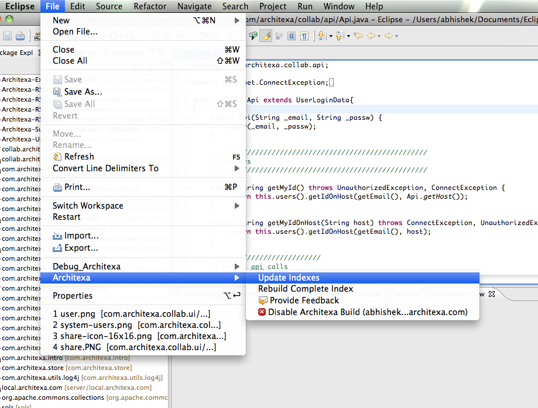
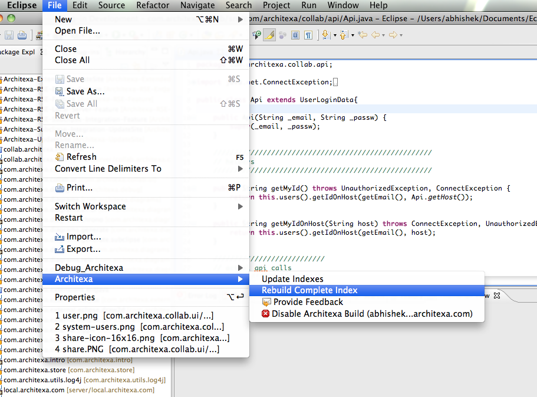

Building the Architexa Index
Architexa analyzes and indexes your code to provide you with powerful diagramming features.Sometimes after making changes to your code you may want to make sure that Architexa has incorporated these changes. Depending on your selection of build schedule the index might not have incorporated the most recent changes made in your code.
To update your index go to "File > Architexa > Update Index"

If you attempt to open a diagram and one or more elements in the diagram have not been indexed yet, Architexa will display a warning letting you know that you may update the diagram to see the most recent changes.
If the integrity of your index becomes corrupted or you want to index a new workspace or project, you may need to Rebuild the entire index.
You can manually ask Architexa to re-index all the projects selected by you in the build filters by going to "File > Architexa > Rebuild Complete Index" 
---- Your question not answered? Send an email to support@architexa.com ----